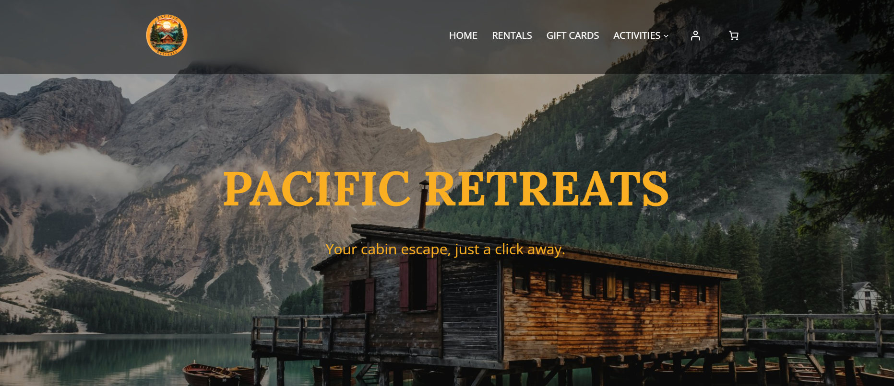

Pacific Retreats
Project Overview
Pacific Retreats is built with WordPress and WooCommerce for a vacation rental business in British Columbia. The site offers cozy cabins for rent, allowing customers to easily select their dates and book online. The design draws inspiration from BC’s natural beauty, featuring a clean, relaxing aesthetic that’s fully responsive across all devices.
Project Tools
- WordPress
- WooCommerce
- PHP
- Figma
Project Details
Design
Our task was to create a WooCommerce website for a small tourism business. The project required several key features:
- A minimum of five rental cabins available for booking
- Option to purchase digital gift cards
- Client testimonials
- Option to purchase digital gift cards
- Important policies or FAQ
- An About page
- An activity page and individual activity pages
- Contact information
- A map showing the cabin locations
- Instagram embed
Development
During the development phase, we focused on implementing the design while ensuring seamless functionality. For project management, we used Trello to stay organized, and GitHub for version control to ensure smooth collaboration.
We developed the Pacific Retreats website using WordPress with the WooCommerce plugin to manage cabin rentals and gift card sales. After setting up the theme and plugins, we customized the site to match our design prototypes, applying the selected color palette, fonts, and styles to maintain a cohesive look.
Each cabin and activity had its own individual page, and we integrated key features like booking functionality, testimonials, FAQs, an Instagram feed, and an interactive map showing the cabin locations.
Finally, we tested the website to ensure it was responsive, easy to navigate, and provided a smooth booking experience across desktop, tablet, and mobile devices.
Reflection
Shares project challenges, lessons learned, and areas for future improvement.